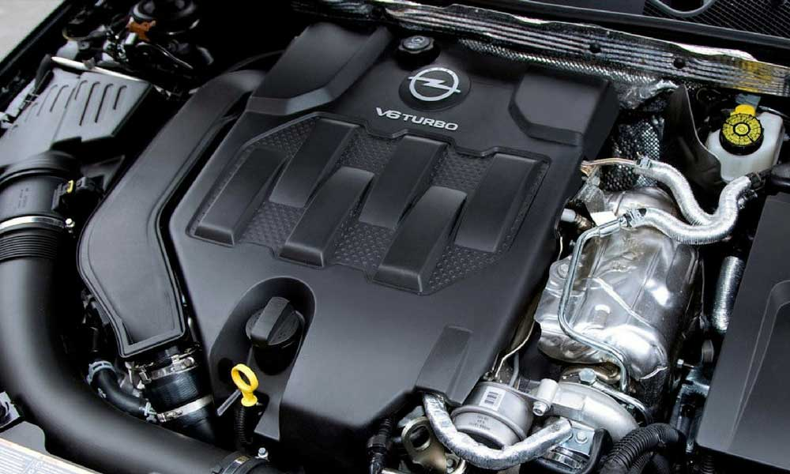
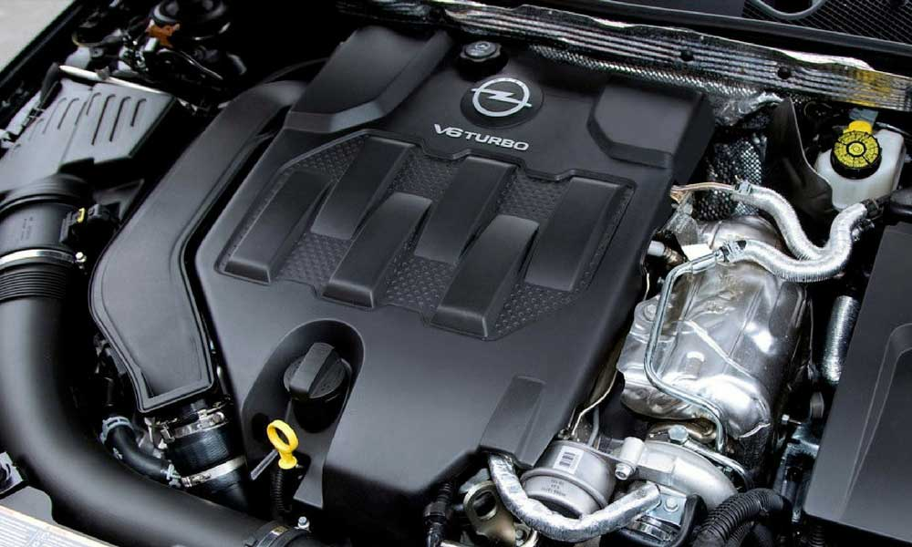

Motor : V 6
Motor kodu : Z32SE
Yakıt Tipi : Benzin
Yakıt Sistemi : Indirect Injection. Variable Intake
Motor pozisyonu : Trasnvers
Motor pozisyonu : Önde motor
Silindir hacmi : 3175 cm3
Silindir çapı x Silindir içi vuruş : 87.5 x 88.0 mm
Valf sayısı : 24 valf
Türbin : N/A
Sıkıştırma Oranı : 10
Maksimum beygir gücü : 211 PS or 208 bhp or 155 kW @ 6200 rpm
Maksimum tork : 300 Nm or 221 lb.ft 4000 rpm
Çekiş : FWD
şanzıman : 5 vites Manual Transmission relations
Debriyaj : Dry single disc clutch
Maksimum sürat / Azami Hız : 248 km/h
Hızlanma 0 - 100 km/saat (sn) : 7.5 s
Yakıt tüketimi - Ortalama: 9.8 L/100km
Yakıt tüketimi - Şehir dışı: 7.3 L/100km
Yakıt tüketimi - Şehir içi: 14.0 L/100km
Menzil : 622 Km
Depo hacmi / Yakıt Tankı / Deposu kapasite : 61 L
Co2 Emisyonu(gr/km) : - g/Km (estimate)